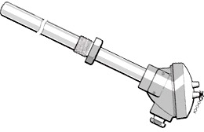
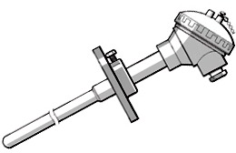
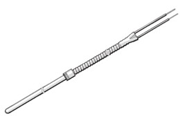
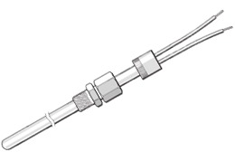
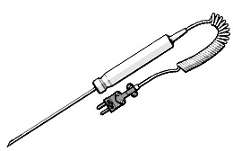
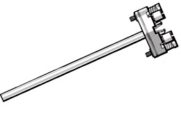
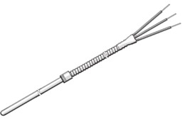
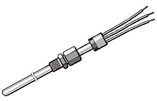
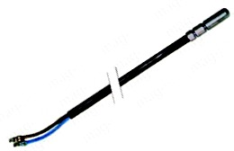
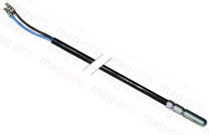

Fabricación a medida de todo tipo de termopares (J, K, T, R, S, etc...) y de termorresistencias (Pt 100, Pt 1000, Ni 100, Ni 1000, etc...) en cualquier formato:
Con cable incorporado (Cables apantallados, silicona, teflón, etc...).
Con cabeza de conexiones: DIN A, B, C (Mini), BBK (Poliamida), DAN (IP 65), EExd, etc...
Ejecución estandar o para altas temperaturas (Aislamiento con óxido de magnesia compactado, MgO).
Vainas adecuadas a todo tipo de aplicaciones: AlSl 316, AlSl 310, AISI 446, lnconel 600, Hierro ArmcoB, TeflónB, Cerámica, etc...
Posibilidad de salida 4/20 mA mediante transmisor incorporado (Standard ó Seguridad intrínseca: EEx ia/ib IIC T4).
Comercialización de todo tipo de equipos de control y regulación de temperatura, microprocesadores, video-registradores, paneles PC.
Termosonda en vaina metálica

Diseñados específicamente para la medida de temperatura en entornos industriales como hornos y altos hornos, baños de galvanizado, baños de tratamientos térmicos y en general aplicaciones de alta temperatura. Su construcción robusta proporciona una vida prolongada del sensor.
Disponibles en varios tipos: termopar K, T, J, N, S y termorresistencias PT-100, PT-1000
Vainas de protección en acero inoxidable, Inconel 600, Incoloy 800.
Ver cañas pirométricas.
Termopar cerámico alta temperatura

Estos termopares incorporan una vaina cerámica y están especialmente diseñados para medidas de alta temperatura hasta 1600ºC o mayores. Aplicaciones típicas: fundiciones, altos hornos, baños. Se pude fabricar según la longitud definida por el usuario.
Disponibles en varios tipos: K, S, N, T, R…simple o doble.
Vainas cerámicas de protección, principales y secundarias en diversos diámetros y materiales
Bridas de fijación a proceso.
Termopar propósito general

Estos termopares son adecuados para aplicaciones de propósito general hasta una temperatura de 400°C, según el tipo de termopar. Disponibles en varios tipos: J, K, T, N y E simples o dobles. El material de la vaina para estos sensores es acero inoxidable AISI-316 y la unión de medida se puede realizar como estándar a masa para conseguir una respuesta rápida ante los cambios de temperatura o asilada de masa. Ver catálogo general termopares.
Termopar bayoneta general
Estos termopares de bayoneta son adecuados para la industria del plástico y aplicaciones de propósito general con un adaptador ajustable de bayoneta. La posición del sensor es ajustable al instalarlo y se puede doblar para adecuarlo al proceso. Disponibles en varios tipos: K, T, J, N y E. Rango de temperatura 800ºC. Ver catálogo termopares.
Termopar encamisado

También conocidos como de aislamiento mineral, son sensores de temperatura muy robustos adecuados para su uso en condiciones difíciles, según el tipo de construcción el rango de temperatura se extiende desde -200ºC a +1250ºC. En general la vaina se puede conformar para adaptarse a cualquier aplicación sin que afecte a su funcionamiento.
Disponible en varios tipos: j, K, S, T, N, R, con diámetros de vaina desde 0.25mm a 12,7mm.
Distintas terminaciones: con cabezal, conector, cable, convertidor, etc.
Diferentes tipos de materiales de vaina: acero inoxidable, Inconel..etc.
Temosonda con mango

Fabricación en varios tipos: termopar J, K, termoresistencia PT-100, PT-1000 etc.
Existen diferentes tipos de ejecución para las sondas con mango, de forma que se pueden adaptar a una gran variedad de aplicaciones y rangos de temperatura. Se suministran con un puño de nylon, el cable en espiral y por lo general terminado en conector mini macho para poder conectarlo a la instrumentación. Amplio rango de ejecuciones: aguzada en bisel (mostrado aquí), aguzada, perforada (para ambiente), con muelle (para superficie), etc. Gran variedad de diámetros y longitudes de vaina. Vainas rígidas o flexibles (aislamiento mineral)
Termosonda con zócalo cerámico

Este tipo de montaje es ideal para ser alojado dentro de sondas de temperatura envainadas o con termopozo. Puede ser instalado con el zócalo cerámico o bien con un convertidor 4...20mA. Unos resortes de fijación permiten el continuo contacto entre el extremo de medida y el fondo del termopozo apto para su montaje en cabezal.
Disponibles para termopares tipos: K, J, S, simple o doble y termorresistencias PT-100
Termorresistencia propósito general

Sondas Pt100 o PT-1000 de propósito general, también pueden ser fabricadas para aplicaciones de alta precisión. El material de la vaina es acero inoxidable AISI 316. Fabricadas según norma IEC 751, disponibles en clase B, A. Adecuado para aplicaciones de propósito general y medidas precisas de temperatura. Diversos acabados, sistemas de fijación, etc.
Termorresistencia mineral

Son sensores robustos aptos para su utilización en las condiciones más severas, cuyo rango de temperatura abarca desde -50ºC a 350ºC. La vaina puede ser doblada y conformada para adaptarse a cualquier situación sin deteriorar sus características. Diámetros de vaina desde 2mm a 12.7mm.
Sensores PTC

Sensor de temperatura PTC (semiconductor) a 2 hilos. Valor de 990Ω a 25°C Bulbo Ø6x40mm. Cable PVC o Silicona. Rango de medición de -55°C a 150°C
Sensores NTC

Sensor de temperatura NTC (semiconductor) a 2 hilos. Valor de 10KΩ a 25°C.
Bulbo Ø6x40mm. Cable PVC o Silicona. Rango de medición de -50°C a 110°C Específico para frio.